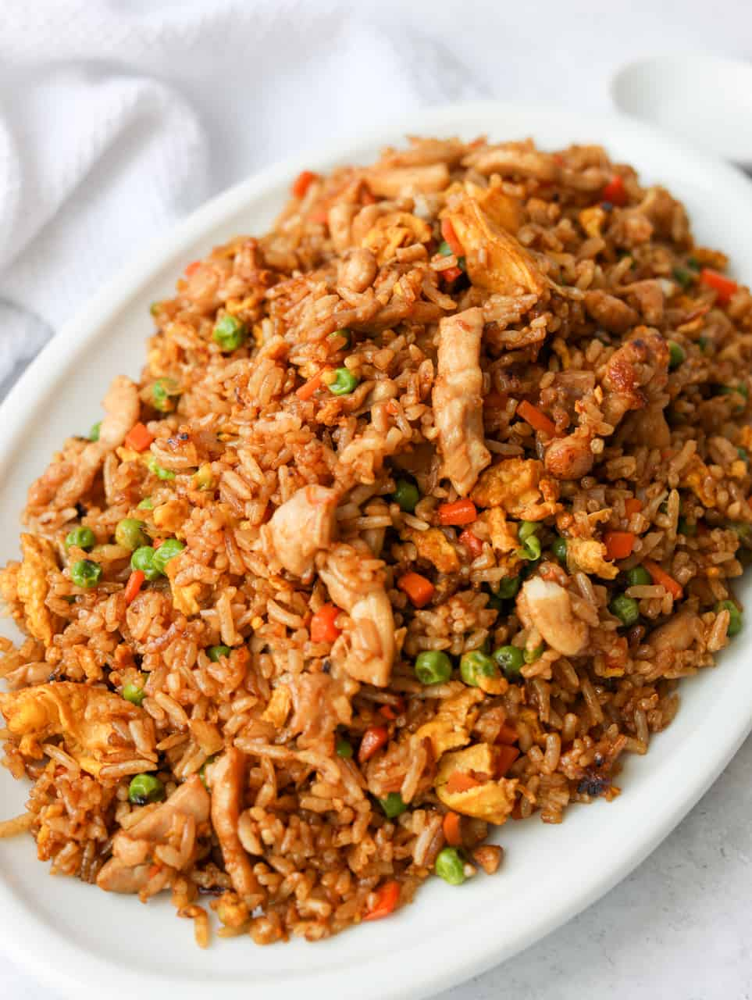

Chicken Fried Rice

Chicken and Rice is Mighty nice
I started doing this recipe after watching some Uncle Roger vijeos on YouTube I paid close attention and I think I nailed it, if not made it better. Even if I am being biast
Ingredients
- 2 Cups of Jasmine Rice
- Seasame Oil
- 4 Cups of Water
- Baking soda
- white vinegar
- Ginger Powder
- Bacon Fat
- Soy Sauce
- 5 cloves of garlic - Minced
- 1/2 Shallot - Diced
- Curry Powder
- Oyster sauce
- fish sauce
- MSG
- 3 Eggs - Scrambled
- White Pepper
- 2-3 Butterflied Chicken Breast
- 4-5 Sliced Button Mushrooms
- Green onion chives
Steps
- Cook Rice, as it takes the longest, It can be cooked ahead of time, but I find little difference the way I cook the rice
- Throughly Rince the rice through a strainer and Tap water until runs clear
- Bring 4 cups of Water in Cast Iron pan, and bring to boil
- Season water with Ginger and Curry powders
- once boiling, reduce heat to low and stir in rinced rice, then cover for 18 minutes. Once done, remove lid, fluff, recover and place aside.
- While Rice is cooking, we will velvet the Chicken, place butterflied chicken in zip lock back with a few tablespoons of Baking powder and then slowly add White vinegar. This will violently Bubble
- Once gas exchange calms down add enough vinegar to cover chicken, squeeze out air, 90% seal the bag and place to the side, upright
- Chop Shallots, Mushrooms, Garlic
- Heat Cast Iron skillet until water beads like mercury
- add seasame seed oil, bacon fat and aromatics
- Rinse chicken and grill in Skillet, season with spices
- once cooked, add oil and Scrambled egg in corner of skillet
- stir in Egg with meat and aromatics, and ladel in Rice
- Add Soy until color is just right and saltiness desired
- Add chopped Green onions for garnish and crunch